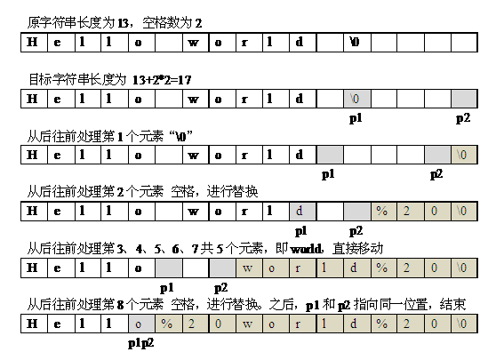

编写一个程序，把字符串中的每个空格清除掉。例如输入“We are happy.”，则输出“Wearehappy.”。
由于字符串的内存分配方式是连续分配的。我们从字符串当中删除一个空格字符时，需要把后面所有的字符往前移动一个字节的位置。但如果每次删除都需要移动字符串后面的字符的话，对于一个长度为n 的字符串而言，删除一个空格字符的时间复杂度为O(n) 。而对于本题而言，有可能要删除的空格字符的个数是n ，因此该方法就删除而言的时间复杂度为O(n2) 。
事实上，我们并不需要在每次删除一个空格的时候都去移动后面所有的字符。我们可以设想，当一个空格需要被删除的时候，我们把它所占的位置让它后面的字符来填补，也就相当于这个空格被删除了。具体方法为：
（1）定义两个指针p1和p2，p2用于遍历原始字符串，p1用于指向结果字符串中当前赋予的非空格字符。初始状态都指向字符串首字符。
（2）如果p2指向的元素不为空格，那么将p2指向的内容赋值给p1，然后p1和p2指向下一个元素；如果p2指向的内容为空格，那么p2指向下一个元素，p1保持不动。
（3）直到p2指向字符串末尾的“\0”时，清除空格结束。
#include<iostream>
using namespace std;
int main()
{
char str[81];
cin.getline(str,80,'\n');
//设置两个指针指向数组首元素
char *p1=str;
char *p2=str;
while(*p1!='\0')
{
if(*p2!=' ') //如果p2指向不为空格，则将p2指向内容复制给p1指向
*p1++=*p2++;
else //如果p2指向为空格，则p2指针向前移动一格。
p2++;
}
cout<<str<<endl;
return 0;
}
上例删除字符串中的所有空格，在实际应用中，有时空格需部分保留，如字符串中的多个连续空格，则保留1个。这样，可以将这个问题进行扩展，对给定字符串，删除开始和结尾处的空格，并将中间的多个连续的空格合并成一个。
编写一个程序，对给定的字符串，删除开始和结尾处的空格，并将中间的多个连续的空格合并成一个。例如输入" We are happy. "，则输出"We are happy."
因为需要删除开始和结尾处的空格，而字符串中间的空格又需要保存一个，因此需要进行另外的处理。可以通过设置一个标识位来进行处理，定义一个bool变量flag表示是否保存一个空格，如果flage=true表示保存一个空格，如果flag=false则不保存空格。初始化的时候将flag设为false，这样开始阶段的空格都不会被保存，当碰到一个不为空格的字符时，保存该字符，然后设置flag=true表明会保存后面待扫描的字符串中的第一个空格，这样在碰到第一个空格时就能够保存。
按上面的操作方法，扫描结束后，目标字符串的结尾要么是非空格字符，要么是一个空格字符，这样进行一次判断就好了，如果是空格字符，这将该空格设为“\0”，如果不为空格字符，则在其后面加上“\0”。
#include<iostream>
using namespace std;
int main()
{
char str[81];
cin.getline(str,80,'\n');
int index=0;
bool flag=false;
for(int i=0;str[i]!='\0';i++)
{
if(str[i]!=' ') // 如果遍历到的是非空格字符，则进行赋值
{
str[index++]=str[i];
flag=true; // 表示允许保存一个空格
}
else if(flag) // 如果允许有一个空格
{
str[index++]=str[i];
flag=false;
}
}
if(index>0&&str[index-1]==' ') //处理字符串最后的多余空格
{
str[index-1]='\0';
}
else
{
str[index]='\0';
}
cout<<str<<endl;
return 0;
}
在网络编程中，如果URL参数中含有特殊的字符，如空格、“#”等，导致服务器端无法识别时，就把这些特殊的字符转换成可以识别的字符。转换规则是：%加上十六进制的ASCII码，例如空格的ASCII码是32（16进制为0x20），就被替换成%20。
编写一个程序，把字符串中的每个空格替换成“%20”。例如输入“We are happy.”，则输出“We%20are%20happy.”。
将长度为1的空格替换为长度为3的“%20”，字符串的长度会变长。如果另外开辟一个新的数组来存放替换空格后的字符串，那么这个问题非常容易解决。设置两个指针分别指向新旧字符串首元素，遍历原字符串，如果碰到空格就在新字符串中填入“%20”，否则就复制原字符串中的内容。但这种新开辟数组保存结果字符串的做法，会造成空间的浪费。
如果在原字符串后面有足够多的空余空间，可以在原来的字符串上做替换。下面来探讨替换的方法。
因为把空格替换为”%20“，每次替换多2个字符，因此在可以统计出原来字符串的长度和其中空格的总个数后，计算出结果字符串的长度为“原字符串长度 + 2*空格数 ”。
替换操作从后往前进行，思路为：遇到非空格，直接搬到后面；遇到空格，替换为“%20”。 直到待插入位置指针和原字符串的扫描指针的位置重合。具体过程描述为：
（1）首先遍历原字符串str，统计出原字符串的长度strlen以及其中的空格数量blanknum。
（2）根据原字符串的长度和空格的数量，求出结果字符串的长度newlen，即newlen=strlen+blanknum*2。
（3）定义两个指针p1和p2分别指向原字符串和结果字符串的末尾位置，即p1=str+strlen、 p2=str+newlen。
（4）如果p1指向内容不为空格，那么将内容直接赋值给p2指向的位置，且p2指针前移；如果p1指向内容为空格，那么从p2指向位置开始赋值“02%”。
（5）p1指针前移。
（6）直到p1==p2时，表明字符串中的所有空格都已经替换完毕。
例如，按上述操作过程，将字符串“Hello world ”中的空格进行替换的操作如图1所示。

图1 空格替换操作过程
#include<iostream>
using namespace std;
int main()
{
char str[81];
cin.getline(str,80,'\n');
int strlen=0;
int blanknum=0;
int i=0;
//求字符串长度和空格数量
while(str[i]!='\0')
{
strlen++;
if(str[i]==' ')
blanknum++;
i++;
}
int newlen=strlen+blanknum*2;//求新字符串长度
if(newlen>=80)
{
cout<<"替换后，串超过了预定义的长度。"<<endl;
return 0;
}
//设置两个指针指向新旧数组末尾
char *p1,*p2;
p1=str+strlen; p2=str+newlen;
//当上面两个指针指向同一个元素则表明没有空格
while(p1>=str && p2>p1)
{
if(*p1==' ')
{
*p2='0'; p2--;
*p2='2'; p2--;
*p2='%'; p2--;
}
else
{
*p2=*p1; p2--;
}
p1--;
}
cout<<str<<endl;
return 0;
}